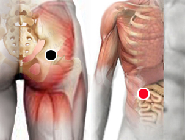

Vellonella (Veillonella)
Par
gluteo -píloro

Generalidades:
Provoca trastornos digestivos, meteorismo, intolerancia alimentaria, o incluso dolor de piernas. En la boca puede causar periodontitis, caries.
Causante de Osteomielitis (infección e inflamación osea)
Habita comunmente en la boca y tubo digestivo de humanos (también es común en otras especies) Aparece en los niños a los pocos días de nacidos. Es una bacteria oportunista que en unos cuantos casos puede causar patología afectando distintas partes del cuerpo como huesos, aparato digestivo, sistema respiratorio, corazón, hígado, o el sistema nervioso central.
Buscar algún otro patógeno que la pueda excitar.
Transmisión
Común en todos los humanos.